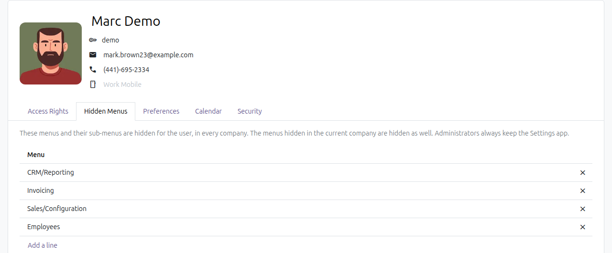
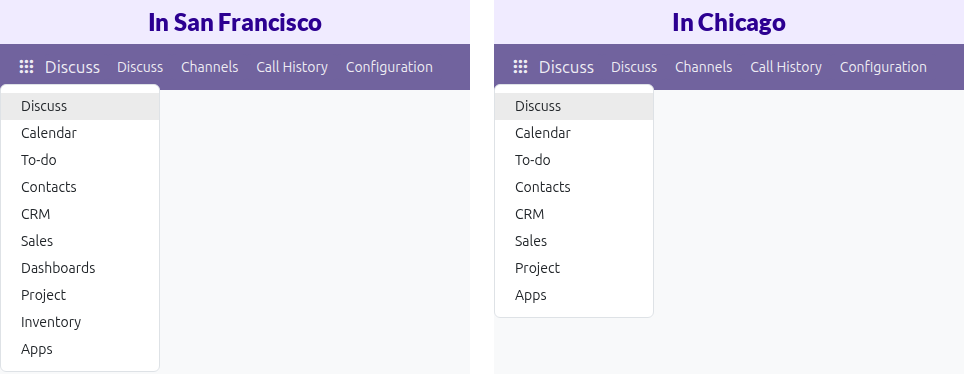
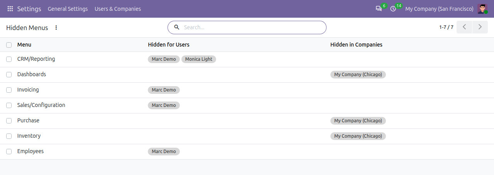

Hide any menu or app for one user, or for everyone while a company is the current company. Each user sees only the part of Odoo they work in, and switching company in the switcher shows the menus of that company.
Open the user, go to the Hidden Menus tab and add the menus to hide. The user no longer sees them, whatever the company they work in.

The menus hidden for a user.
Open the company and add the menus to hide in its Hidden Menus tab. They are hidden for every user while that company is the current one.

The apps of the same user, in two companies.
Settings > Users & Companies > Hidden Menus lists every hidden menu with the users and the companies it is hidden for.

Every hidden menu, with its users and companies.
Does it forbid the data?
No. Hiding a menu is not an access right: a user who knows the address of a page can still open it. Use the groups and record rules of Odoo to forbid the data itself.
With several companies active, which rules apply?
Those of the current company, the first one in the company switcher, with those of the user.
Can I hide the Settings app?
Yes, from the users who are not administrators. The administrators always keep it.
What does it need?
Nothing else: it only depends on the base and web modules, so it works on Odoo 18 Community and Enterprise alike.